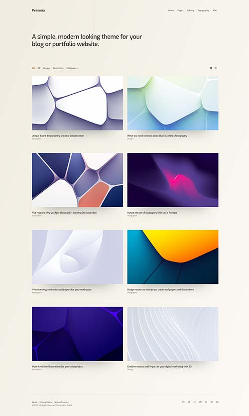

新主题Persona太漂亮 litenote 四月 15, 2022 Updated on 四月 17, 2022 Publii官网上了新主题Persona，非常漂亮，在我是审美中，这就是最好的设计。怎么办，我已经在WordPress上面耕耘了好几个月了，之前不是已经下定决心要死磕WordPress了么，怎么这么快就有放弃的想法了呢？ 还不是因为这款主题，看看整体效果吧：  可以查看官方demo看看总体效果。 Publii官方主题还是有不少漂亮的，但是往往都是付费，这款主题提供了免费版本，免费版本就已经很棒了。我很快就把网站改成了这款主题，整体效果也是很不错的。